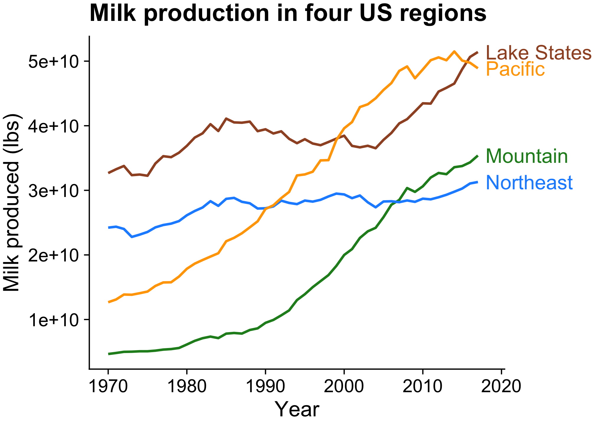
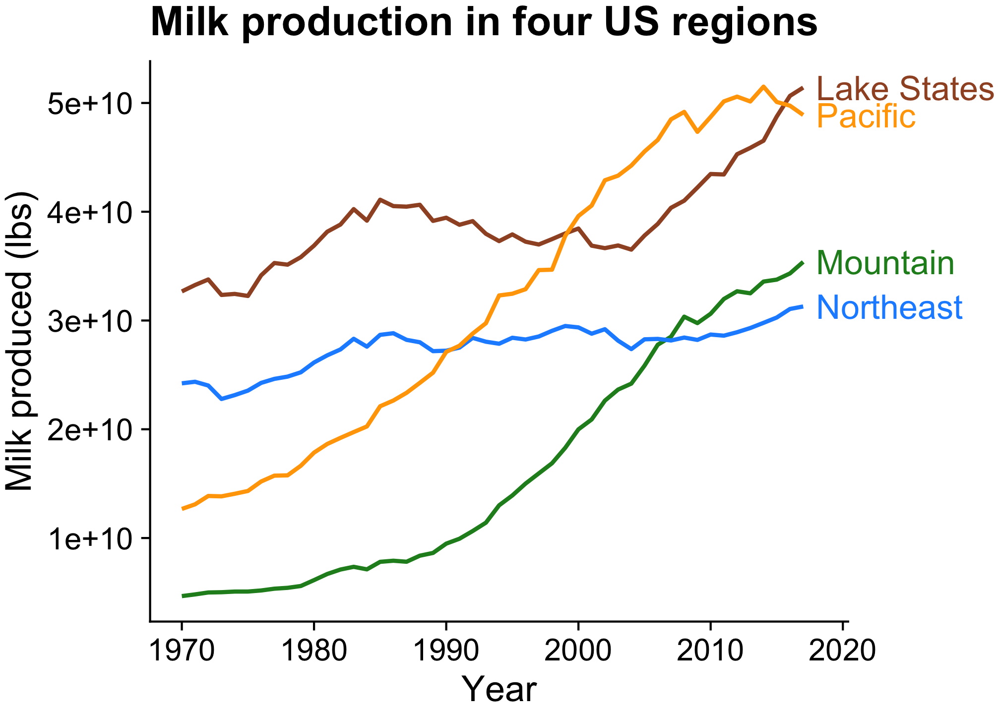
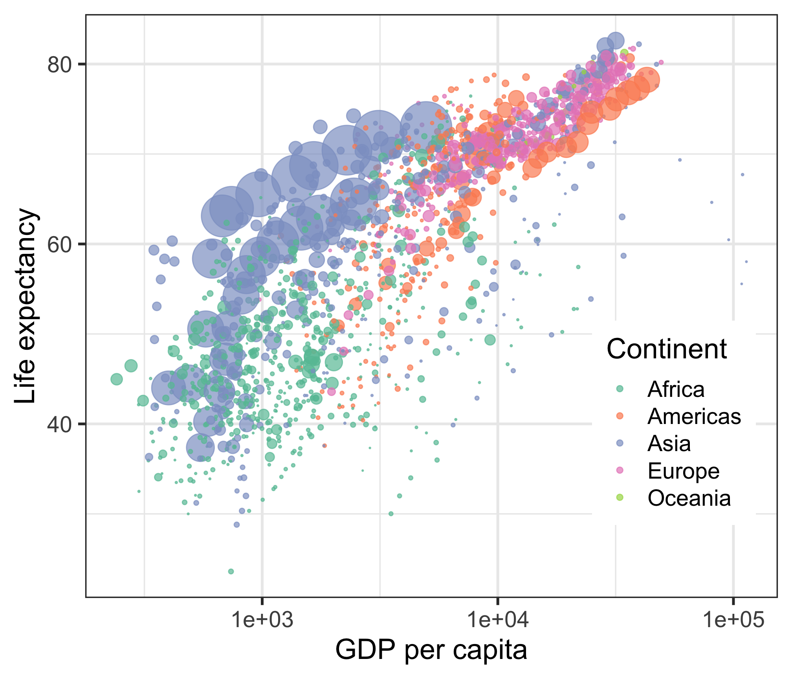

15 Animation
15.1 Why Animate?
Animation adds emphasis to the change over time …plus it’s fun!Static chart:
Animated chart
Static chart:

Animated chart
Animation is particularly helpful for the time dimension

“Gapminder” visualization by Hans Rosling

Source: https://www.climate-lab-book.ac.uk/spirals/

Financial Times comparison of Flu seasons to COVID-19
“Bar chart race” of top 10 milk producing states
Make a static plot w/labels for each year
milk_region_anim_plot <- milk_region %>%
ggplot(
aes(x = year, y = milk_produced,
color = region)) +
geom_line(size = 1) + #<<
geom_point(size = 2) + #<<
geom_text_repel( #<<
aes(label = region), #<<
hjust = 0, nudge_x = 1, direction = "y", #<<
size = 6, segment.color = NA) + #<<
scale_x_continuous(
breaks = seq(1970, 2010, 10),
expand = expansion(add = c(1, 13))) +
scale_color_manual(values = c(
'sienna', 'forestgreen', 'dodgerblue', 'orange')) +
theme_half_open(font_size = 18) +
theme(legend.position = 'none') +
labs(x = 'Year',
y = 'Milk produced (billion lbs)',
title = 'Milk production in four US regions')
milk_region_anim_plotNow animate it
Note the pause at the end!
library(gganimate) #<<
milk_region_anim <- milk_region_anim_plot +
transition_reveal(year) #<<
# Render the animation
animate(milk_region_anim, #<<
end_pause = 15, #<<
duration = 10, #<<
width = 1100, height = 650, res = 150, #<<
renderer = magick_renderer()) #<<
# Save last animation
anim_save(here::here(
'figs', 'milk_region_animation.gif'))First make a static plot
gapminder_anim_plot <- ggplot(gapminder,
aes(x = gdpPercap, y = lifeExp, #<<
size = pop, color = continent)) + #<<
geom_point(alpha = 0.7) +
scale_size_area( #<<
guide = FALSE, max_size = 15) + #<<
scale_color_brewer(palette = 'Set2') +
scale_x_log10() +
theme_bw(base_size = 18) +
theme(legend.position = c(0.85, 0.3)) +
labs(x = 'GDP per capita',
y = 'Life expectancy',
color = 'Continent')
gapminder_anim_plot
Now animate it
Note: Year must be an integer!
gapminder_anim <- gapminder_anim_plot +
transition_time(year) + #<<
labs(title = "Year: {frame_time}") #<<
# Render the animation
animate(gapminder_anim, end_pause = 10,
width = 800, height = 600,
res = 150,
renderer = magick_renderer())milk_race_anim <- milk_production %>%
group_by(year) %>%
mutate(
rank = rank(-milk_produced),
Value_rel = milk_produced / milk_produced[rank==1],
Value_lbl = paste0(' ', round(milk_produced))) %>%
group_by(state) %>%
filter(rank <= 10) %>%
ungroup() %>%
mutate(year = as.integer(year)) %>%
ggplot(aes(x = rank, group = state,
fill = region, color = region)) +
geom_tile(aes(y = milk_produced / 2, #<<
height = milk_produced), #<<
width = 0.9, alpha = 0.8, color = NA) + #<<
geom_text(aes(y = 0, label = paste(state, " ")),
vjust = 0.2, hjust = 1) +
geom_text(aes(y = milk_produced, label = Value_lbl),
hjust = 0) +
coord_flip(clip = 'off', expand = FALSE) +
scale_y_continuous(labels = scales::comma) +
scale_fill_viridis(discrete = TRUE) +
scale_color_viridis(discrete = TRUE) +
scale_x_reverse() +
guides(color = FALSE) +
theme_minimal_vgrid() +
theme(
axis.line = element_blank(),
axis.text = element_blank(),
axis.ticks = element_blank(),
axis.title = element_blank(),
legend.position = c(0.7, 0.3),
legend.background = element_rect(fill = 'white'),
plot.title = element_text(
size = 22, hjust = 0.5, face = 'bold',
colour = 'grey', vjust = -1),
plot.subtitle = element_text(
size = 18, hjust = 0.5,
face = 'italic', color = 'grey'),
plot.caption = element_text(
size = 8, hjust = 0.5,
face = 'italic', color = 'grey'),
plot.margin = margin(0.5, 2, 0.5, 3, 'cm')) +
transition_time(year) + #<<
view_follow(fixed_x = TRUE) + #<<
labs(title = 'Year : {frame_time}',
subtitle = 'Top 10 states by milk produced',
fill = 'Region',
caption = 'Milk produced (billions lbs)')animate(milk_race_anim, duration = 17, end_pause = 15,
width = 800, height = 700, res = 150,
renderer = magick_renderer())More animation options: